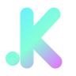

Option 1: Pulse K
Alt K

Rounded monoline K
A detached node and thick rounded strokes echo the `M` reference without turning it into a copy. It stays clean but still has personality.
Monoline / rounded / closest to your ask
Why I think you’ll like it: it gives you the clearer `K` direction you asked for, but with a softer, more contemporary silhouette than the angular options we tried before.
If the brand needs a letterform, this is the strongest starting point in this set.